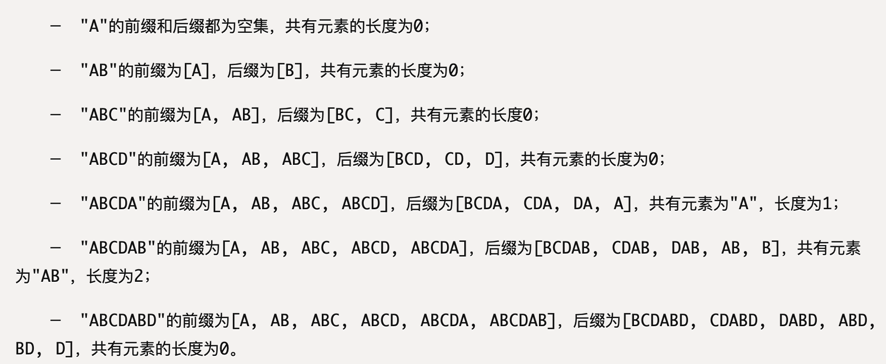

KMP 算法注解
KMP
暴力算法是在失配时，回溯子串指针，从头开始匹配。而 KMP 失配时尝试更有进取心地往前走，掠过那些不可能匹配的情况。往前移动的长度由一个「部分匹配表」来确定。

（图片来自 CLRS《Introduction to Algorithms, 3rd Ed》[^1]）
部分匹配表其实就是失配那个位置前面（匹配上的）里面最长的公共前后缀长度，移动就是要把前缀直接对上后缀那个位置，就略过了中间不可能匹配（已经扫过了，后面不匹配，再重复扫也还是不匹配）的那一段，直接开始尝试下一个可能的匹配。
部分匹配表
参考 Wikipedia 的算法 [^2]（看英文页，中文页没写全，有些段落缺失）。
手算：
1 | func GetNext(substr: string) []int { // substr: [0…M-1] |
其中「最长公共前后缀」就是例如：

（图片来自 阮一峰《字符串匹配的KMP算法》[^3]）
编程快速计算：
1 | func GetNext(substr string) []int { |
匹配
KMP：
1 | func KMP(s string, substr string) int { |
这个程序是真的可以运行的：
1 | package main |
next 数组
补充一点：部分匹配表，还有几种不同的版本，比如《算法导论》[^1] 上的，再比如我们的考研书（天勤王道）[^4]$^,$[^5]上的。
（考研书上把部分匹配表亲切地称为 “next 数组”。。。）
这几种的区别看下面这个例子：
| index | 0 | 1 | 2 | 3 | 4 | 5 | 6 | |
|---|---|---|---|---|---|---|---|---|
| char | a | b | a | b | a | c | a | |
| CLRS | 0 | 0 | 1 | 2 | 3 | 0 | 1 | |
| Wikipedia | -1 | 0 | 0 | 1 | 2 | 3 | 0 | = CLRS 右移一个，左边补-1 |
| 天勤王道 | 0 | 1 | 1 | 2 | 3 | 4 | 1 | = Wikipedia + 1 |
若在原串（大的）索引 i 处、模式（子串）索引 j 处失配：
- CLRS 移动到
T[j-1]上（特殊情况：j=0则i+=1） - Wikipedia 移到
T[j]上（特殊情况：j=-1则j+=1）。
更好理解的代码
说实话，我看不懂上面给的代码。主要是这段 if (j==-1 || s[i] == substr[j]) {...} WTF？？
研究了好久才看懂明明就是两种不同的情况，只是凑巧处理方式一样就合并在一起，，搁这儿写汇编呢。。吐了。
参考 知乎上的回答 [^6] 把这两种情况分开写就容易理解多了：
1 | func GetNext(substr string) []int { |
改进 KMP
考研书上的，用个 nextval 替代 next 数组。
nextval 构造规则如下：
1 | nextval[0] = -1; |
就是构建部分匹配表，回溯（缩小）的时候，如果回到的上一步 next[j] 的字符和当前字符相同，就不必一步步回溯了（之前已经走过了），直接借用之前的结果，快速回溯到头。
e.g.
| substr | A | B | A | B | A | A | B |
|---|---|---|---|---|---|---|---|
| j | 0 | 1 | 2 | 3 | 4 | 5 | 6 |
| next | -1 | 0 | 0 | 1 | 2 | 3 | 1 |
| nextval | -1 | 0 | -1 | 0 | -1 | 3 | 0 |
（记得考验书上索引从 1 开始，next、nextval 的值都要加一）
推荐阅读
还有下面参考文献的阮一峰，通俗易懂，看这篇手算就够了。Wikipedia 的也还行（一定要看英文页）。
有时间再啃 CLRS。
死背代码的话，天勤王道。
还有 https://leetcode-cn.com/problems/implement-strstr/solution/kmp-suan-fa-xiang-jie-by-labuladong/ 这篇写的也屌（这个大佬的公众号我关注了数年了），用动规（其实是 DFA）解释了 KMP，推荐阅读。
参考文献
[^1]: Cormen T H , Leiserson C E , Rivest R L , et al. Introduction to Algorithms, 3rd Ed.
[^2]: Wikipedia. Knuth–Morris–Pratt algorithm. https://en.wikipedia.org/wiki/Knuth–Morris–Pratt_algorithm
[^3]: 阮一峰. 字符串匹配的KMP算法. http://www.ruanyifeng.com/blog/2013/05/Knuth–Morris–Pratt_algorithm.html
[^4]: 率辉主编. 数据结构高分笔记（2022版 天勤第10版）. 机械工业出版社, 2020.
[^5]: 王道论坛组编. 2022年数据结构考验复习指导. 电子工业出版社, 2021
[^6]: 阮行止. 如何更好地理解和掌握 KMP 算法?. https://www.zhihu.com/question/21923021/answer/1032665486